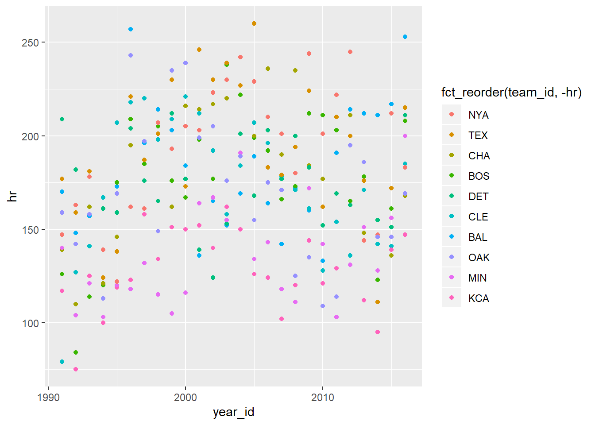
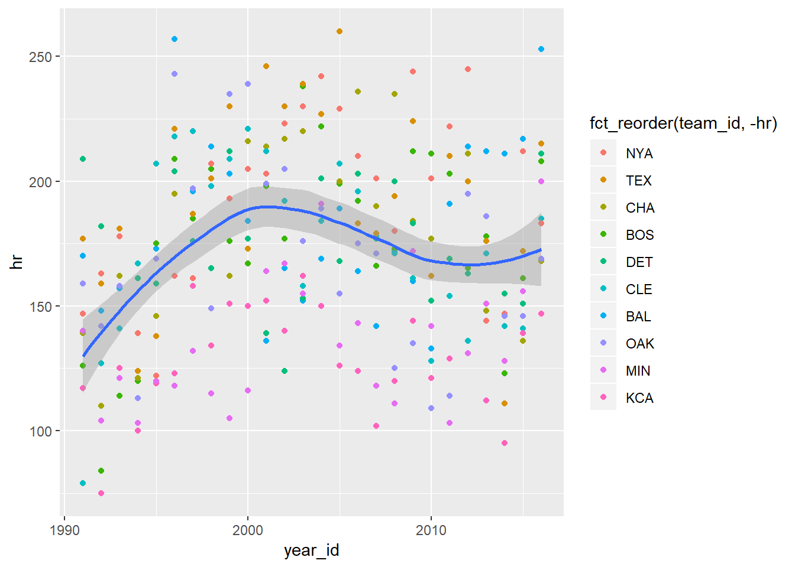
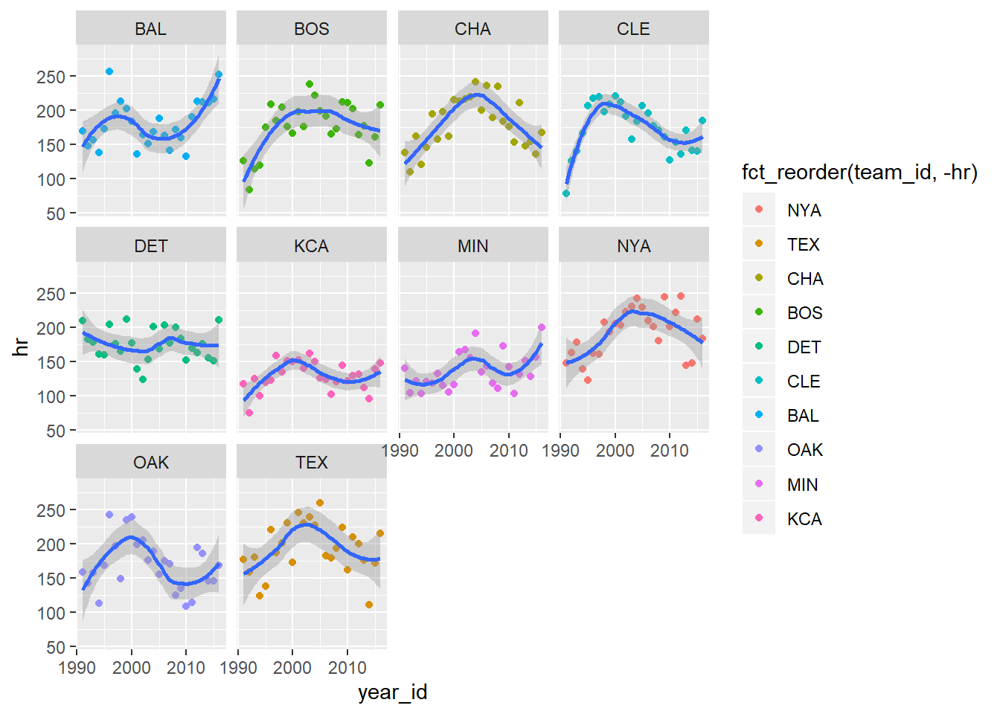
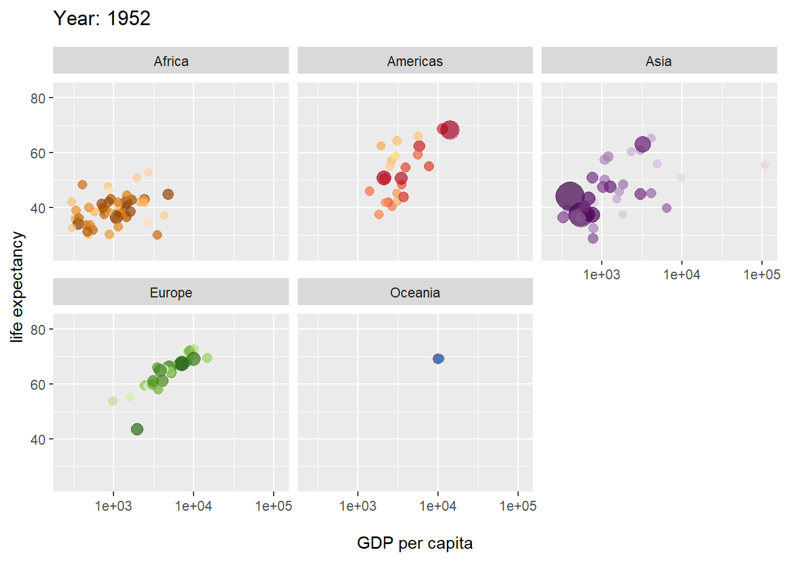
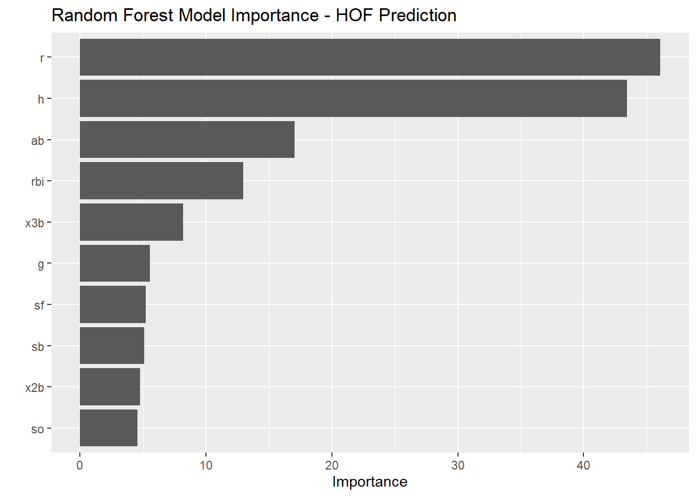

3 Data Visualization
3.1 Bar Chart
## # A tibble: 1,564 x 9
## player_id player h doubles triples hr ab g slg
## <chr> <chr> <dbl> <dbl> <dbl> <dbl> <dbl> <dbl> <dbl>
## 1 ruthba01 Babe Ruth 2873 506 136 714 8398 2503 0.690
## 2 willite01 Ted Williams 2654 525 71 521 7706 2292 0.634
## 3 gehrilo01 Lou Gehrig 2721 534 163 493 8001 2164 0.632
## 4 foxxji01 Jimmie Foxx 2646 458 125 534 8134 2317 0.609
## 5 bondsba01 Barry Bonds 2935 601 77 762 9847 2986 0.607
## 6 greenha01 Hank Greenberg 1628 379 71 331 5193 1394 0.605
## 7 mcgwima01 Mark McGwire 1626 252 6 583 6187 1874 0.588
## 8 ramirma02 Manny Ramirez 2574 547 20 555 8244 2302 0.585
## 9 dimagjo01 Joe DiMaggio 2214 389 131 361 6821 1736 0.579
## 10 hornsro01 Rogers Hornsby 2930 541 169 301 8173 2259 0.577
## # ... with 1,554 more rows


3.1.5 Coordinate Flip

3.1.6 Reorder Factors
slgname %>%
top_n(20, h) %>%
ggplot(aes(x=fct_reorder(player,hr), y = hr)) +
geom_col() +
coord_flip()
3.1.7 Color Bars
slgname %>%
top_n(20, h) %>%
ggplot(aes(x=fct_reorder(player,hr), y = hr, fill = slg)) +
geom_col() +
coord_flip()
3.1.8 Update Labels
slgname %>%
top_n(20, h) %>%
ggplot(aes(x=fct_reorder(player,hr), y = hr, fill = slg)) +
geom_col() +
coord_flip() +
labs(x = "Player", y = "Home Runs", title = "Top 20 Home Run Hitters", fill = "Slugging Percentage",
subtitle = "1871-2016", caption = "*Among Players Who've Played at least 1000 games")
3.2 Scatter Plot
data %>%
filter(lg_id == "AL") %>%
mutate(team_id = fct_lump(team_id, n = 12)) %>%
filter(team_id != "Other") %>%
filter(complete.cases(.)) %>%
filter(year_id>1990) %>%
group_by(team_id,year_id) %>%
summarise_at(vars(g:gidp), ~sum(.)) %>%
ggplot(aes(x=year_id,y=hr,color = fct_reorder(team_id,-hr))) +
geom_point() 
data %>%
filter(lg_id == "AL") %>%
mutate(team_id = fct_lump(team_id, n = 12)) %>%
filter(team_id != "Other") %>%
filter(complete.cases(.)) %>%
filter(year_id>1990) %>%
group_by(team_id,year_id) %>%
summarise_at(vars(g:gidp), ~sum(.)) %>%
ggplot(aes(x=year_id,y=hr)) +
geom_point(aes(color = fct_reorder(team_id,-hr))) +
geom_smooth()## `geom_smooth()` using method = 'loess' and formula 'y ~ x'
data %>%
filter(lg_id == "AL") %>%
mutate(team_id = fct_lump(team_id, n = 12)) %>%
filter(team_id != "Other") %>%
filter(complete.cases(.)) %>%
filter(year_id>1990) %>%
group_by(team_id,year_id) %>%
summarise_at(vars(g:gidp), ~sum(.)) %>%
ggplot(aes(x=year_id,y=hr)) +
geom_point(aes(color = fct_reorder(team_id,-hr))) +
geom_smooth() +
facet_wrap(~team_id)## `geom_smooth()` using method = 'loess' and formula 'y ~ x'
library(gapminder)
ggplot(gapminder, aes(gdpPercap, lifeExp, size = pop, colour = country)) +
geom_point(alpha = 0.7, show.legend = FALSE) +
scale_colour_manual(values = country_colors) +
scale_size(range = c(2, 12)) +
scale_x_log10() +
facet_wrap(~continent) +
# Here comes the gganimate specific bits
labs(title = 'Year: {frame_time}', x = 'GDP per capita', y = 'life expectancy') +
transition_time(year) +
ease_aes('linear')##
Rendering [-------------------------------------------------] at 2.7 fps ~ eta: 36s
Rendering [>------------------------------------------------] at 2.5 fps ~ eta: 39s
Rendering [>------------------------------------------------] at 2.6 fps ~ eta: 38s
Rendering [=>-----------------------------------------------] at 2.4 fps ~ eta: 40s
Rendering [=>-----------------------------------------------] at 2.4 fps ~ eta: 39s
Rendering [==>----------------------------------------------] at 2.5 fps ~ eta: 38s
Rendering [==>----------------------------------------------] at 2.5 fps ~ eta: 37s
Rendering [===>---------------------------------------------] at 2.5 fps ~ eta: 36s
Rendering [===>---------------------------------------------] at 2.6 fps ~ eta: 35s
Rendering [====>--------------------------------------------] at 2.6 fps ~ eta: 35s
Rendering [=====>-------------------------------------------] at 2.6 fps ~ eta: 34s
Rendering [=====>-------------------------------------------] at 2.5 fps ~ eta: 34s
Rendering [======>------------------------------------------] at 2.5 fps ~ eta: 34s
Rendering [=======>-----------------------------------------] at 2.5 fps ~ eta: 33s
Rendering [=======>-----------------------------------------] at 2.6 fps ~ eta: 33s
Rendering [========>----------------------------------------] at 2.6 fps ~ eta: 32s
Rendering [=========>---------------------------------------] at 2.6 fps ~ eta: 31s
Rendering [==========>--------------------------------------] at 2.6 fps ~ eta: 31s
Rendering [==========>--------------------------------------] at 2.6 fps ~ eta: 30s
Rendering [===========>-------------------------------------] at 2.6 fps ~ eta: 30s
Rendering [===========>-------------------------------------] at 2.6 fps ~ eta: 29s
Rendering [============>------------------------------------] at 2.6 fps ~ eta: 29s
Rendering [============>------------------------------------] at 2.6 fps ~ eta: 28s
Rendering [=============>-----------------------------------] at 2.6 fps ~ eta: 28s
Rendering [=============>-----------------------------------] at 2.6 fps ~ eta: 27s
Rendering [==============>----------------------------------] at 2.6 fps ~ eta: 27s
Rendering [==============>----------------------------------] at 2.6 fps ~ eta: 26s
Rendering [===============>---------------------------------] at 2.6 fps ~ eta: 26s
Rendering [================>--------------------------------] at 2.6 fps ~ eta: 25s
Rendering [=================>-------------------------------] at 2.6 fps ~ eta: 24s
Rendering [==================>------------------------------] at 2.6 fps ~ eta: 24s
Rendering [==================>------------------------------] at 2.6 fps ~ eta: 23s
Rendering [===================>-----------------------------] at 2.6 fps ~ eta: 23s
Rendering [====================>----------------------------] at 2.6 fps ~ eta: 23s
Rendering [====================>----------------------------] at 2.6 fps ~ eta: 22s
Rendering [=====================>---------------------------] at 2.6 fps ~ eta: 22s
Rendering [=====================>---------------------------] at 2.6 fps ~ eta: 21s
Rendering [======================>--------------------------] at 2.6 fps ~ eta: 21s
Rendering [======================>--------------------------] at 2.6 fps ~ eta: 20s
Rendering [=======================>-------------------------] at 2.6 fps ~ eta: 20s
Rendering [=======================>-------------------------] at 2.6 fps ~ eta: 19s
Rendering [========================>------------------------] at 2.6 fps ~ eta: 19s
Rendering [========================>------------------------] at 2.6 fps ~ eta: 18s
Rendering [=========================>-----------------------] at 2.6 fps ~ eta: 18s
Rendering [==========================>----------------------] at 2.6 fps ~ eta: 17s
Rendering [===========================>---------------------] at 2.6 fps ~ eta: 16s
Rendering [============================>--------------------] at 2.6 fps ~ eta: 16s
Rendering [============================>--------------------] at 2.6 fps ~ eta: 15s
Rendering [=============================>-------------------] at 2.6 fps ~ eta: 15s
Rendering [==============================>------------------] at 2.6 fps ~ eta: 14s
Rendering [===============================>-----------------] at 2.6 fps ~ eta: 14s
Rendering [===============================>-----------------] at 2.6 fps ~ eta: 13s
Rendering [================================>----------------] at 2.6 fps ~ eta: 13s
Rendering [================================>----------------] at 2.6 fps ~ eta: 12s
Rendering [=================================>---------------] at 2.6 fps ~ eta: 12s
Rendering [==================================>--------------] at 2.6 fps ~ eta: 11s
Rendering [===================================>-------------] at 2.6 fps ~ eta: 10s
Rendering [====================================>------------] at 2.6 fps ~ eta: 10s
Rendering [====================================>------------] at 2.6 fps ~ eta: 9s
Rendering [=====================================>-----------] at 2.6 fps ~ eta: 9s
Rendering [=====================================>-----------] at 2.6 fps ~ eta: 8s
Rendering [======================================>----------] at 2.6 fps ~ eta: 8s
Rendering [=======================================>---------] at 2.6 fps ~ eta: 7s
Rendering [========================================>--------] at 2.6 fps ~ eta: 7s
Rendering [========================================>--------] at 2.6 fps ~ eta: 6s
Rendering [=========================================>-------] at 2.6 fps ~ eta: 6s
Rendering [=========================================>-------] at 2.6 fps ~ eta: 5s
Rendering [==========================================>------] at 2.6 fps ~ eta: 5s
Rendering [===========================================>-----] at 2.6 fps ~ eta: 4s
Rendering [============================================>----] at 2.6 fps ~ eta: 3s
Rendering [=============================================>---] at 2.6 fps ~ eta: 3s
Rendering [=============================================>---] at 2.6 fps ~ eta: 2s
Rendering [==============================================>--] at 2.6 fps ~ eta: 2s
Rendering [===============================================>-] at 2.5 fps ~ eta: 1s
Rendering [================================================>] at 2.5 fps ~ eta: 0s
Rendering [=================================================] at 2.5 fps ~ eta: 0s
##
Frame 1 (1%)
Frame 2 (2%)
Frame 3 (3%)
Frame 4 (4%)
Frame 5 (5%)
Frame 6 (6%)
Frame 7 (7%)
Frame 8 (8%)
Frame 9 (9%)
Frame 10 (10%)
Frame 11 (11%)
Frame 12 (12%)
Frame 13 (13%)
Frame 14 (14%)
Frame 15 (15%)
Frame 16 (16%)
Frame 17 (17%)
Frame 18 (18%)
Frame 19 (19%)
Frame 20 (20%)
Frame 21 (21%)
Frame 22 (22%)
Frame 23 (23%)
Frame 24 (24%)
Frame 25 (25%)
Frame 26 (26%)
Frame 27 (27%)
Frame 28 (28%)
Frame 29 (29%)
Frame 30 (30%)
Frame 31 (31%)
Frame 32 (32%)
Frame 33 (33%)
Frame 34 (34%)
Frame 35 (35%)
Frame 36 (36%)
Frame 37 (37%)
Frame 38 (38%)
Frame 39 (39%)
Frame 40 (40%)
Frame 41 (41%)
Frame 42 (42%)
Frame 43 (43%)
Frame 44 (44%)
Frame 45 (45%)
Frame 46 (46%)
Frame 47 (47%)
Frame 48 (48%)
Frame 49 (49%)
Frame 50 (50%)
Frame 51 (51%)
Frame 52 (52%)
Frame 53 (53%)
Frame 54 (54%)
Frame 55 (55%)
Frame 56 (56%)
Frame 57 (57%)
Frame 58 (58%)
Frame 59 (59%)
Frame 60 (60%)
Frame 61 (61%)
Frame 62 (62%)
Frame 63 (63%)
Frame 64 (64%)
Frame 65 (65%)
Frame 66 (66%)
Frame 67 (67%)
Frame 68 (68%)
Frame 69 (69%)
Frame 70 (70%)
Frame 71 (71%)
Frame 72 (72%)
Frame 73 (73%)
Frame 74 (74%)
Frame 75 (75%)
Frame 76 (76%)
Frame 77 (77%)
Frame 78 (78%)
Frame 79 (79%)
Frame 80 (80%)
Frame 81 (81%)
Frame 82 (82%)
Frame 83 (83%)
Frame 84 (84%)
Frame 85 (85%)
Frame 86 (86%)
Frame 87 (87%)
Frame 88 (88%)
Frame 89 (89%)
Frame 90 (90%)
Frame 91 (91%)
Frame 92 (92%)
Frame 93 (93%)
Frame 94 (94%)
Frame 95 (95%)
Frame 96 (96%)
Frame 97 (97%)
Frame 98 (98%)
Frame 99 (99%)
Frame 100 (100%)
## Finalizing encoding... done!
